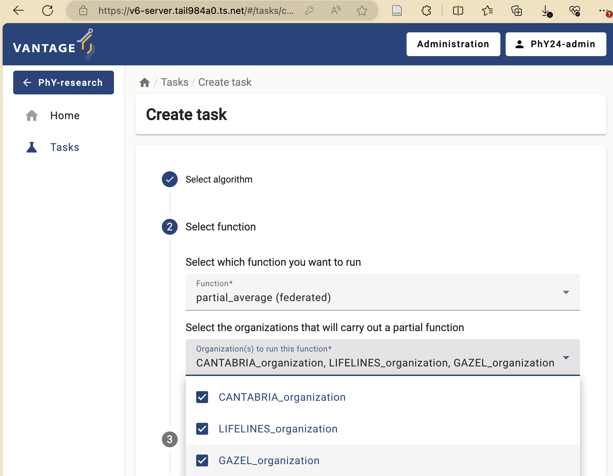

Understand that there is paperwork to be done (DPIA etc.)
Problem statement
The amount of data being generated nowadays is absolutely
mind-boggling. This data can be a valuable resource for researchers.
However, personal data should be handled with great care and
responsibility because of its sensitive nature. This is why there are
privacy regulations in place like GDPR to prohibit easy access to this
wealth of data.
However, often researchers are not interested in the personal records
that make up the data, but rather in the insights derived from
it. This raises an intriguing question: Can we unlock these valuable
insights in a manner that upholds and respects privacy standards?
In classic data analysis, all data is copied over into a single
place. This makes it very easy to use conventional data analysis
software and tools to gain insights.
In classic analysis all the data is brought
together
Unfortunately this way of working does not respect the privacy of the
people contained within the dataset. All their personal details end up
at another party.
Other problems with copying data
Discuss in groups what other issues you see with handling the data by
copying everything into one central place.
You might think of multiple issues. Some examples:
The original data owner loses control of the data
Results in multiple versions of the data
What to do when the data needs to be updated?
If there was consent in the first place, how can you retract
consent?
Data anonymization and pseudonymization
The first step in the process is often data anonymization.
Personal identifiable information will in this case be removed so that
individuals stay anonymous. Data pseudonimization is a similar
process, but in this case, the records will be assigned an id that will
make it possible to link individuals across datasets.
Data anonymization
While data anonymization and pseudonymization are often a good first
step, there is no guarantee that the data will never be reidentified. A
famous example of reidentification is the story of the Netflix prize.
The Netflix prize was an open competition to build the best recommender
system to predict user ratings for films based on previous ratings. The
data was anonymized, but in 2007 two researchers from The University of
Texas at Austin were able to identify a large number of users by
matching the dataset with film ratings on the Internet Movie Database
(IMDB).
Federated data analysis
There are different ways in which privacy risks can be mitigated. We
will focus on the idea of federated analysis. In a federated setting,
the data with the data owner, who keeps full control over it. In this
case, it is not the data that travels, but the analysis itself. The
system sends a query or instruction to the data and only the results
will get back to the user. The results are often akin to a form of
aggregation of the data. This can be in the shape of
traditional statistics like the mean, or it can be more intricate like a
machine learning model.
Aggregating the data does not ensure complete protection of
person-level information, but it certainly makes it less likely that
this will happen.
TODO: Example of data leakage in simple aggregated case
Federated learning
The term federated learning was introduced in 2016 by researchers at
Google (McMahan et
al.) and refers to a “loose federation of participating devices
(which we refer to as clients) which are coordinated by a central
server.” In traditional federated learning, the clients train machine
learning models, and only the updates of the models are sent back to the
central server. The central server combines the updates from all the
individual clients into one final machine learning model.
There are caveats to using this type of data analysis though.
Although the data transmitted from the clients to the server are an
aggregation of the raw data, researchers have found a way to use this
data to reconstruct the original data. This vulnerability is called
gradient leakage.
An example of gradient leakage
Secure Multiparty Computation
There are different solutions to prevent the reconstruction of raw
data. One solution is to make sure that no party other than the data
owner is actually able to see the intermediate data. One branch of
techniques that can be used for this is Secure Multiparty Computation
(MPC). With MPC,
computations are performed collaboratively by multiple parties. Data is
encrypted in such a way that other parties cannot see the original
values, but values of multiple parties can still be combined (
e.g. added or multiplied). A classic technique from the field of MPC is
secret sharing. With this technique data is encrypted, after which
pieces of the encryption are sent to the other parties. No single party
will be able to reconstruct the original value. Only when all parties
work together, the original value can be retrieved.
When combining multiple values using secret sharing, this will result
in the parties owning new puzzle pieces that when put together will
reveal the result of the computation.
Secret sharing, an example
Mees, Sara and Noor want to know how much they weigh in total. Mees
weighs 43 kg, Sara weighs 39, Noor weighs 45. They create secret shares
for their weights that they give to their peers.
Mees receives
Sara receives
Noor receives
Sum
Mees generates:
-11
50
4
43
Sara generates:
-12
17
34
39
Noor generates:
-19
-38
64
45
They sum their shares:
Mees
-4
Sara
29
Noor
102
They add their sums together: -4 + 29 + 102 = 127 In this way, they
have aggregated their data without sharing their individual data with
anyone else.
TODO: Exercise with secret sharing where data is leaked.
Differential privacy
As mentioned before, aggregation of data will not always prevent
leaks of sensitive information. Consider the example of Mees, Sara and
Noor. We know their total weight is 127 kg. If Sara and Noor get
together and subtract their weights off of the total, they will be able
to infer how much Mees weighs.
An aggregation is differentially private when someone cannot infer
whether a particular individual was used in the computation. A way to
make a result more differentially private is to replace a selection of
inputs with random noise. A single individual will then always be able
to deny that their data has contributed to the final result. An
individual has plausible deniability with regards to whether it
was part of the dataset.
Blocks upon blocks
The previously mentioned techniques are not used in isolation, but
are usually stacked on top of eachother to mitigate the privacy risks
that are relevant within a certain usecase. Typically, the process
begins by anonymizing or pseudonymizing the data. With vantage6, the
data is then placed in a federated setting. You can use the existing
algorithms available for vantage6, which often incorporate various
privacy-enhancing techniques.
Data partitioning
Data sharing challenges come in many different shapes and sizes, but
in the end, the goal of the researchers is often to analyze data as
if it were available in one big table in one place. There are 2
main ways in which the dataset can be separated over different sources:
horizontal and vertical partioning. In
horizontal partitioning, this giant table has been snipped in pieces by
making horizontal cuts. The result is that information of an individual
record will stay in one place, but the records themselves have been
scattered around in different locations.
In vertical partitioning, the cuts have been made vertically. Columns
have now been divided over different locations. This type of
partitioning is usually more challenging because often a way needs to be
found to link identities across datasources. Vertical partitioning
requires different types of privacy enhancing algorithms than horizontal
partitioning.
In reality, data can be horizontally and vertically partitioned at
the same time. It might be necessary to combine multiple techniques in
order to overcome your problems.
Technology doesn’t solve everything
You have now learned about various technologies for analyzing data
while preserving privacy of individuals. However, it should be
emphasized that these technologies do not solve all your data sharing
problems. Rather, they are only a small piece of the puzzle. In research
projects involving privacy enhancing technologies, a lot of work goes
into complying with regulations and building trust.
Since these projects have a risk of affecting the privacy of
individuals, a Data Protection Impact Assessment (DPIA) is usually
required. This is a process that will help identify and minimize privacy
risks of a project and is required by GDPR.
Apart from procedures required by GDPR there might be other
regulations in place enforced by the owners of the data
(e.g. hospitals). The specific situation of a project can affect the way
in which the data is allowed to be processed. Some privacy enhancing
technologies might be allowed in one project but prohibited in another.
It is always important to stay transparent about privacy risks of the
technologies you intend to use.
List the high-level infrastructure components of vantage6 (server,
client, node)
Understand the added value of vantage6
Understand that there are different actors in the vantage6
network
Understand that the vantage6 server does not run algorithms
Explain how a simple analysis runs on vantage6
Understand the future of vantage6 (policies, etc.)
Unique selling points of vantage6
vantage6 is a platform to execute privacy enhancing techniques
(PETs). Several alternative platforms for PETS are available, but
vantage6 provides some unique features:
Open source.
Container orchestration for privacy enhancing techniques.
Easily extensible to different types of data sources.
Algorithms can be developed in any language.
Other applications can connect to vantage6 using the API.
Managing and enforcing collaboration policies
Minimal network requirements at data stations
The vantage6 infrastructure
In vantage6, a client can pose a question to the
central server. Each organization with sensitive data
contributes one node to the network. The nodes collect
the computation request from the server and fetches the
algorithm to answer it. When the algorithm completes,
the node sends the aggregated results back to the server.
High level overview of the vantage6
infrastructure. Client(s) and Node(s) communicate through the Server.
Nodes are able to communicate directly with each other when the optional
VPN feature is enabled.
On a technical level, vantage6 may be seen as a container
orchestration tool for privacy preserving analyses. It deploys a network
of containerized applications that together ensure insights can be
exchanged without sharing record-level data.
Lets explain in some more detail what these network actors are
responsible for, and which subcomponents they contain.
Server
The A (central) server that acts as communication
hub between clients and nodes. The server
tracks the status of the computation requests and handles administrative
functions such as authentication and authorization.It consists of
multiple applications:
Vantage6 server: Contains the users,
organizations, collaborations, tasks and their results. It handles
authentication and authorization to the system and acts as the
communication hub for clients and nodes.
Docker registry: Contains algorithms stored in
images which can be used by clients to request a computation. The node
will retrieve the algorithm from this registry and execute it. It is
possible to use public registries for this purpose like Docker hub or Github Containers. However it is also
possible to host your own registry, for example a Harbor instance.
Algorithm store: Is intended to be used as a
repository for trusted algorithms within a certain project. Algorithm
stores can be coupled to specific collaborations or to all
collaborations on a given server.
EduVPN
instance: If algorithms need to be able to engage in
peer-to-peer communication, a VPN server can be set up to help them do
so.
RabbitMQ:
Is used to synchronize the messages between multiple vantage6 server
instances.
Data Station
The data station hosts the node
(vantage6-node), that have access to the local data and execute
algorithms, and a database.
Vantage6 node: The node is responsible for
executing the algorithms on the local data. It protects the data by
allowing only specified algorithms to be executed after verifying their
origin. The node is responsible for picking up the task, executing the
algorithm and sending the results back to the server. The node needs
access to local data. For more details see the technical documentation
of the node.
Database: The database may be in any format that
the algorithms relevant to your use case support. The currently
supported database types are listed here.
Client
A user or application who interacts with the vantage6-server. They
create tasks, retrieve their results, or manage entities at the server
(i.e. creating or editing users, organizations and collaborations).
The vantage6 server is an API, which means that there are many ways
to interact with it programatically. There are however a number of
applications available that make is easier for users to interact with
the vantage6 server:
User interface The user interface
is a web application (hosted at the server) that allows users to
interact with the server. It is used to create and manage organizations,
collaborations, users, tasks and algorithms. It also allows users to
view and download the results of tasks. Use of the user interface
recommended for ease of use.
Python client The vantage6
python client is a Python package that allows users
to interact with the server from a Python environment. This is
especially usefull for data scientists who want to integrate vantage6
into their existing Python workflow.
API It is also possible to interact with the
vantage6-server using the API
directly.
How algorithms run in vantage6
Federated algorithms can be split in a federated and
a central part:
Central: The central part of the algorithm is
responsible for orchestration and aggregation of the partial
results.
Federated: The partial tasks are executing
computations on the local privacy sensitive data.
vantage6 central and federated tasks.
Now, let’s see how this works in vantage6. The user creates a task
for the central part of the algorithm. This is registered at the server,
and leads to the creation of a central algorithm container on one of the
nodes. The central algorithm then creates subtasks for the federated
parts of the algorithm, which again are registered at the server. All
nodes for which the subtask is intended start their work by executing
the federated part of the algorithm. The nodes send the results back to
the server, from where they are picked up by the central algorithm. The
central algorithm then computes the final result and sends it to the
server, where the user can retrieve it
vantage6-server vs central part of an
algorithm
It is easy to confuse the central server with the central part of the
algorithm: the server is the central part of the infrastructure but not
the place where the central part of the algorithm is executed. The
central part is actually executed at one of the nodes, because it gives
more flexibility: for instance, an algorithm may need heavy compute
resources to do the aggregation, and it is better to do this at a node
that has these resources rather than having to upgrade the server
whenever a new algorithm needs more resources.
Challenge
Two centers \(A\) and \(B\) have the following data regarding the
age of a set of patients: \(a = [34, 42, 28,
49]\)
\(b = [51, 23, 44]\)
Each center has a data station and We want to compute the overall
average age of the patients.
Architecture.
Given that we that the the central average can be computed using the
following equation:
\(\overline{x} =\dfrac{1}n \sum_{i=1}^{n}
x_i\)
It can be written as follow, to make it ready for a federate
computation:
Back in 2018 when the development of vantage6 started, the focus was
on Federated Learning. Since then, vantage6 has been extended to support
different types of data sources, different types of algorithms and
improved its usability. Privacy Enhancing Technologies (PET) are a
rapidly evolving field. To keep up with the latest developments, the
vantage6 platform is designed to be flexible and to adapt to new
developments in the field.
From the development team we are working towards making vantage6 the
PETOps platform for all your (distributed) analysis needs.
[Image of the PETOps cycle]
We identified a number of areas where we want to improve and extend
vantage6 in order to achieve this goal:
Policies
Currently, vantage6 lets you set several policies, such as the
organizations that are allowed to participate in a collaboration, the
algorithms that are allowed to run on the nodes, and the data that is
allowed to be used in a collaboration. We want to extend this to a more
generic policy framework in which any aspect of the vantage6 platform
can be controlled by policies. This will maximize the flexibility of the
platform and make it easier to adapt to new use cases.
For example, it would be possible:
Define the version of vantage6 that is allowed to be used in a
collaboration
Which users is allowed to run a certain algorithm
Which algorithms are allowed in a collaboration/study
Define privacy guards at algorithm level
In order to avoid that policies need to be set manually at the nodes,
we envision a distributed policy system (possibly using Blocakchain) in
which policies are distributed to the nodes by the server.
Model Repository
Currently vantage6 is focused on privacy enhancing techniques. Some
of these techniques result in a model that can be used to make
predictions. We want to extend vantage6 with a model repository in which
these models can be stored, shared and used. This will make it easier to
reuse models and to compare the performance of different models.
Build Services
Algorithms in vantage6 are shipped as container images. Currently,
this image can be build by the user or some external process. We want to
extend vantage6 with a build service that can build the container image
for you. This will make it easier to develop and deploy algorithms in
vantage6 but more importantly, it will enhance the security of the
platform as they are build in a controlled environment.
What is a common collaboration scenario where the same institution
is involved in multiple collaborations?
How to check the status of a given collaboration within
vantage6?
How to link an algorithm store to a given collaboration?
How to request a task based on a given algorithm through vantage6’s
UI?
Objectives
Explore specific data analysis scenarios that further illustrate the
concept of collaboration
Understand the concept of ‘algorithm trustworthiness’ in the context
of a vantage6 collaboration
Understand v6’s algorithm-store current and envisioned features
Understand the UI-based approach for performing a data analysis
through the given scenarios
Vantage6 user interface basics
To navigate vantage6’s UI seamlessly, it’s essential to grasp the
platform’s fundamental concepts and their interconnections, as the UI
design reflects these relationships. The following is a simplified model
of vantage6 concepts, where a 1-n relationship means that
the entity on the left side of the relationship is related to one or
more entities on the right side. For instance, a
collaboration involves one or more
nodes, but each node can only be
linked to exactly one collaboration. An
n-n relationship is a many-to-many relationship: for
instance, a collaboration can involve multiple
organizations, and at the same time, each
organization can participate in multiple
collaborations.
Vantage6 core concepts
Given the above, the following are the most important concepts to be
considered for this episode:
Organization: a group of users that share a
common goal or interest (e.g., a consortium, an institute, etc.).
An organization has zero or more users who can
perform certain actions.
An organization can have multiple nodes, one for
each collaboration it is part of.
Collaboration: a collection of one or more
organizations working together towards a shared
objective.
In a specific collaboration, each participating
organization needs one node to compute
tasks; In another collaboration, the
same organization must have a separate
node for this collaboration.
Node: the component with access to the
organization data, which also executes algorithms on it. It represents
the individual organizations’ contributions to the network.
Task: a request, created by
users (with a given set of roles) for
the execution of a given algorithm on one or more
organizations within a collaboration. These execution requests are
handled by the corresponding organizations’
node.
User: a person who can perform certain actions
in vantage6.
A user can only belong to one organization.
A user can have multiple roles and can be assigned
with extra permissions not covered by the roles.
A user can create tasks for one or more
organizations within a
collaboration.
Role: a collection of rules that define the
permissions of a user (it will be further explored on Chapter
4).
Result: the output generated by the execution of
an algorithm as part of a
task.
Algorithm: computational models or processes
that are executed on data. Compatible algorithms are those that adhere
to the Vantage6 framework, enabling them to be securely distributed to
nodes for execution.
Where are these concepts in the UI?
After logging in to the vantage6 UI, you will see the start page.
vantage6 UI start page
There are some collaborations displayed on the start page. Clicking
one of the collaborations will show the tasks of that collaboration.
vantage6 UI tasks page
The start page also contains a button Administration in
the top right corner. Clicking on this button will redirect you to the
administration page.
On the administration page, you can manage the entities of vantage6.
The entities are divided into tabs: Organizations,
Collaborations, Roles, Users, and
Nodes. You can click on an entity to see more details or to
edit the entity. We will get back to this later in more detail.
vantage6 UI administration page
Challenge 1: Get familiar with the vantage6
UI
Log in to the vantage6 UI and navigate to the
Administration page. Familiarize yourself with the entities
in the administration page.
Can you find the Organizations,
Collaborations, Roles, Users, and
Nodes tabs?
From theory to practice: a hypothetical case study using vantage6
collaborations
As previously discussed, in vantage6 a collaboration refers to an
agreement between two or more parties to participate in a study or to
answer a research question together. This concept is central to the
Privacy Enhancing Technologies (PETs) that vantage6 supports. Each party
involved in a collaboration remains autonomous, meaning they retain
control over their data and can decide how much of their data to
contribute to the collaboration’s global model and which algorithms are
allowed for execution.
To illustrate this, let’s analyze a hypothetical scenario: two
international research projects relying on vantage6 technology on the
same server:
The first one, PhY2024 (Prevalence of hypertension
and its association with lifestyle), requires determining the average
systolic and diastolic blood pressure levels of the population across
France, Spain, and The Netherlands.
The second, GHT (Global Health Trends), requires
determining the Average BMI across The Netherlands, Spain, and
Germany.
Although both projects are unrelated and independent from each other,
the data from Spain and The Netherlands -required by both- is provided
by the same large-scale cohort studies, namely CANTABRIA (Spain) and
LIFELINES (The Netherlands). However, legal agreements dictate that each
project is granted access solely to the data essential for its intended
purposes (gaining access to the whole set of variables study increases
risks of inference attacks). Data from the French and German population
(for PhY2024 and GHT studies), on the
other hand, will be provided by the GAZEL and GNC prospective cohort
studies.
Following vantage6’s concepts, this scenario would involve two
collaborations, one for each research project. As described in previous
episodes, a vantage6 node is needed for each collaboration.
Consequently, as illustrated in the diagram below, both CANTABRIA and
LIFELINES organizations require two vantage6 data-node instances each.
Since each data node defines its own rules for data access and algorithm
usage, this ensures that analyses from various collaborations, even
those involving shared organizations/datasets, will not conflict with
one another.
Hypothetical collaborations scenario
Algorithms trustworthiness in a federated setting
While a vantage6-supported research infrastructure like the one
described above offers a strong defense against many data privacy risks,
there remains one crucial security aspect that falls outside the
platform’s scope: the validation of the code that will run on this
infrastructure. For instance, the administrators of the nodes running
within each organization are responsible for defining which algorithms
(i.e., which
container images) will be allowed for execution on the respective
collaborations. As this is a critical and complex task that entails
activities like code analysis and verification, working with algorithms
from trusted sources is the primary line of defense against potential
threats.
Vantage6’s algorithm store feature aims to enhance trustworthiness by
offering a centralized platform for managing pre-registered algorithms.
This serves as an alternative to using algorithms from unknown authors
or those lacking transparency regarding their development process and
status. The algorithm store currently allows researchers to explore
which algorithms are available and how to run them. This, along with its
integration with vantage6’s UI, streamlines task execution requests
within collaborations.
As of the time of writing this tutorial, efforts are underway to
integrate additional information to the algorithm metadata such as
creators and code reviewers. Moreover, plans are in place to incorporate
the algorithm review process into the publication procedure for any
algorithms in the store.
Running a PET (privacy-enhancing technology) analysis without
programming!
In this episode, you will perform a PET analysis on an existing
vantage6 collaboration (based on ‘dummy’ nodes) that resembles the two
described above. For reference, the datasets of each organization can be
seen here (TODO).
Challenge 2: understanding a simple federated
algorithm
First, let’s take a look at one of the federated algorithms
-available on the vantage6’s community store- that will be used in this
episode: a
federated average.
Analyze the algorithm based on the code and its comments and answer
the following questions:
How are the central_average and
partial_average functions related?
Why does the central_average function, unlike
partial_average, doesn’t get any data as an input?
Analyze and discuss the potential outcomes if a Task to execute
central_average is initiated within a collaboration where
one of the nodes is offline.
Challenge 3: exploring the status of existing
collaborations configured on a vantage6 server
Below are the administrator credential of GHT and PhY24
collaborations (passwords will be given by the instructors).
User
Roles
Collaboration
PhY24-admin
Collaboration Admin
PhY24
GHT-admin
Collaboration Admin
GHT
Using these credentials check the status of both collaborations.
Given this and your algorithm analysis from Challenge #2 answer the
following:
Which collaborations are ready for creating a Task for the
federated average algorithm?
If one of the collaborations is not ready, which organization you
would need to contact in order to make it ready for executing the
algorithm too?
To check the status of the nodes of each collaboration:
Log in to each one with the given credentials
Click on ‘Administration’ on the top of the UI
select ‘Collaborations’ on the left panel, and then select the
corresponding collaboration.
If there are ‘offline’ nodes, click on the ‘Nodes’ panel on the left
and check when these were seen for the last time.
Collaboration status
Challenge 4: adding an algorithm store to an
organization
In order to execute the average algorithm on a given
collaboration, considering the previous discussion on algorithm
trustwortiness, you need to first register an algorithm store on it
first. Use the credentials given for Challenge #4 to register the
‘community store’, which contains the said algorithm:
https://store.cotopaxi.vantage6.ai
You will now link the ‘community-store’ to the collaboration whose
nodes are ready for it.
Login into the organization using the corresponding credentials from
above.
Click on ‘Administration’ on the top of the UI, select
‘Collaborations’ on the left panel, and then select the corresponding
collaboration.
Click on ‘+ Add algorithm store’
Add the vantage6’s community store. Use any descrption as name, and
provide community store URL:
https://store.cotopaxi.vantage6.ai
Make sure the store is now shown on the collaboration details:
Challenge 5: your first algorithm execution as
a researcher
Now, you’ll take on the role of the researcher within the
collaboration for which you’ve just established the algorithm store.
With this role, you will finally request the execution of the
algorithm.
log in as a researcher using the corresponding credentials
below:
User
Roles
Collaboration
PhY24-rs1
Researcher
PhY24
GHT-rs1
Researcher
GHT
Select the collaboration given on the front page, and select
‘Tasks’ from the panel on the left.
If you have set up everything correctly, the ‘Average’ algorithm
should be now listed under the ‘Select which algorithm you want to
run’ dropdown menu. Select it, and provide a name and a
description.
Algorithm selection
Now the UI will let you choose between the two functions you
explored in Challenge #1. First, try to run the
partial_average on all the nodes individually.

Running a function on all nodes
Select the ‘default’ database, choose any numerical column as a
parameter, and then click on ‘Submit’.
The task you just requested should be listed with a ‘pending’
status. Once finished, explore and download the provided results:
Based on these results, answer the following:
If you repeat the same exercise but with the
central_average function (refer to Challenge #2 if needed),
which organization nodes should you choose this time to actually
calculate the overall (across all the datasets) average? Experiment with
this and discuss the results with the instructors.
What would happen if you select an alpha-numerical column (e.g.,
‘participant_pseudo_id’)? Do this experiment and explore the generated
error logs. Discuss with the instructors how these logs can be used to
diagnose any task execution issues.


 Algorithm selection
Algorithm selection